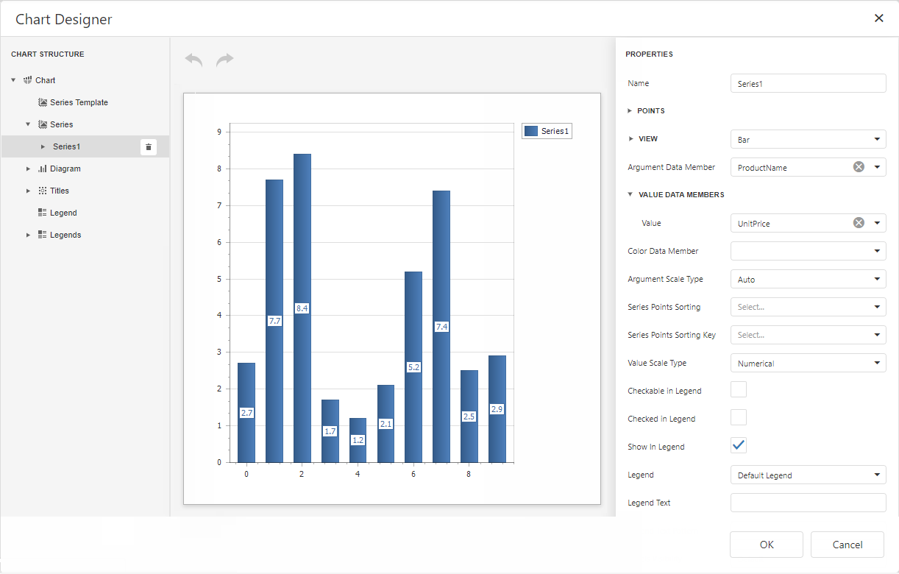
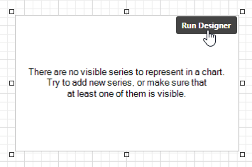
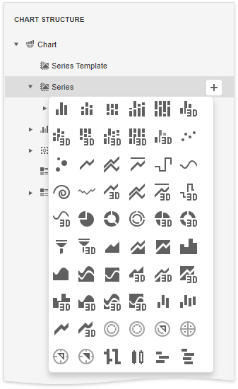
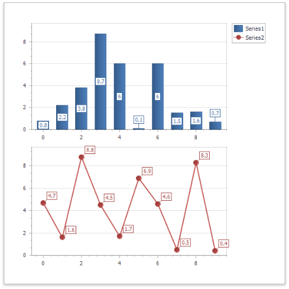
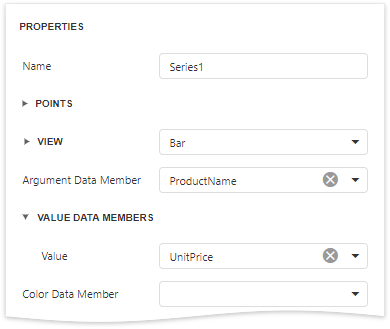

Chart Designer
Chart Designer Overview
The Chart Designer allows you to quickly create and customize charts in the End-User Report Designer.

To invoke the Chart Designer, click the Run Designer button over the chart control.

The Chart Designer consists of three main parts that are described below.
Chart Structure
The Chart Structure tree enables you to explore and manage a structure of a chart and its elements.
When you click a chart element in the tree, the designer's Properties panel displays settings of this element.
To create a new series, click the plus button for the Series collection and select a required series type in the invoked window.

To add elements to other collections (Titles, Legends, etc.), simply click the plus button.
To delete an element, select it and click the Remove  .
.
Chart Layout
The Chart Layout area displays the preview of the created chart.

This part also provides the following buttons:
| Icon | Description |
|---|---|
 |
Reverses the most recent action. |
 |
Performs the action you have previously undone. |
##Chart Properties
The Properties panel allows you to view and change settings of a chart and its elements. Changing any property updates the chart layout to display the current state.
